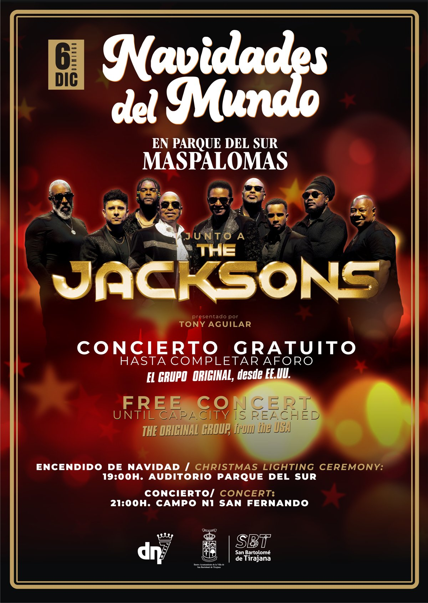

The Jacksons darán la bienvenida a la Navidad en España con un concierto gratis en Gran Canaria
La legendaria banda actuará el domingo 6 de diciembre en Maspalomas, dentro de «Navidades del Mundo», con entrada libre hasta completar aforo. Lo presenta Tony Aguilar.
Gran Canaria va a recibir la Navidad a ritmo de pop y soul. The Jacksons, una de las formaciones más emblemáticas de la historia de la música, llegarán a Maspalomas el domingo 6 de diciembre para protagonizar una jornada musical en el Parque del Sur dentro de la programación «Navidades del Mundo». Y lo mejor: es gratis.
El plan del día. La cita arranca a las 19:00 con el encendido navideño del Ayuntamiento de San Bartolomé de Tirajana en el Auditorio del Parque del Sur, que contará con la presencia del grupo. Después, a las 21:00, llega el plato fuerte: concierto gratuito en el Campo Número 1 (San Fernando). Los dos actos son de acceso libre hasta completar aforo, así que conviene ir con tiempo.
Según el cartel, la noche estará presentada por Tony Aguilar y anuncia al «grupo original, desde EE. UU.».

Quién lo hace posible. La llegada de la banda es obra de DN7 Music, la promotora de David Navarro, junto al Ayuntamiento de San Bartolomé de Tirajana, en una nueva apuesta por colocar a Gran Canaria en el circuito de los grandes espectáculos musicales internacionales.
Una historia que empezó en los 60. The Jacksons nacieron como The Jackson 5, con Michael Jackson como una de sus voces más reconocibles. Temas como «I Want You Back», «ABC», «I'll Be There» o «Blame It on the Boogie» forman parte de un legado que ha cruzado generaciones y que sigue sonando en escenarios de todo el mundo.
En Maspalomas, el público podrá reencontrarse en directo con ese repertorio imprescindible del pop y el soul internacional: el de una familia que revolucionó la industria y ayudó a definir el sonido de varias décadas.
Datos del evento
📅 Domingo 6 de diciembre de 2026
🎄 19:00 · Encendido navideño en el Auditorio del Parque del Sur (Maspalomas)
🎤 21:00 · Concierto en el Campo Número 1 (San Fernando)
🎟️ Entrada gratuita hasta completar aforo
Fuente: nota de prensa de DN7 Music y cartel oficial de «Navidades del Mundo».
Fuente: DN7 Music · Ayuntamiento de San Bartolomé de Tirajana · Por Diego D. Hidalgo · DHDNEWS